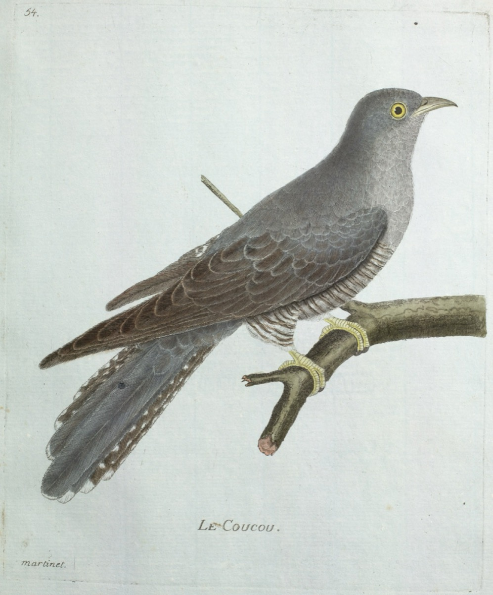

Oaspete de onoare
Auzi cucul? Zice Nicu
Frecând genele la ochi
N-am luat nimic în gură
Fi-r-ai să fi de deochi
De cu ziua m-ai spurcat
Nici pe ochi nu m-am spălat
Cucul, cucul, cucul, cucul
Iată că-nflorește nucul
Am sosit! E primăvară
Dimineață, prânz și seară
Cânt mereu, până când se face vară
Și nu cânt din întâmplare
Cânt pentru întâmpinare
Vreau și eu pâine și sare
Sunt oaspete de onoare
Obicei ce-i strămoșesc
Vreau servit, eu nu cerșesc!
Altfel o să răgușesc
Pupăza din tei confirma
Pu pu pu, pu pu pu
Bine, zise in prag Nicu
Așa cum i-a cântat cucul
Cu o tavă cu mâncare
Iese în întâmpinare
Cucul, cucul, cucul, cucul
Bucuria își cântă cucu
Că s-a întâlnit cu Nicu!
Vasile Groza
Apare și în: Poezii cu animale.